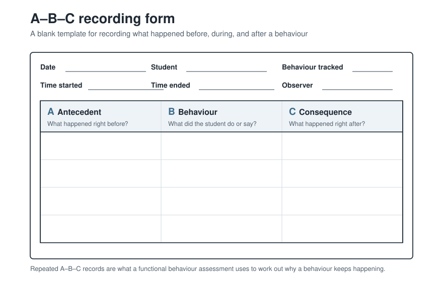
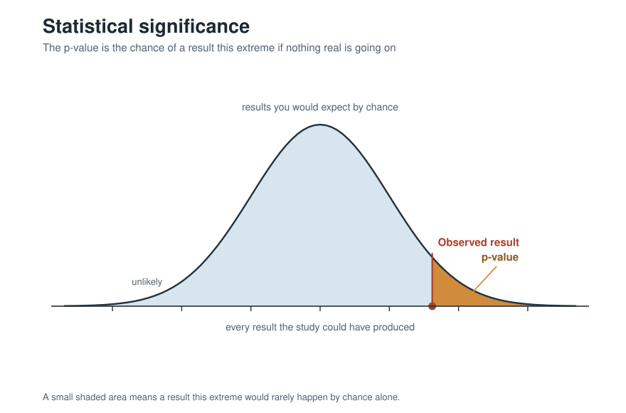
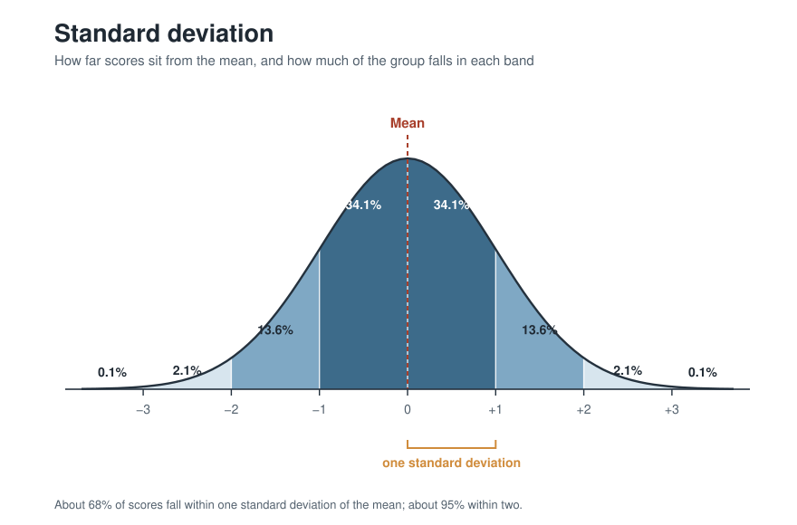
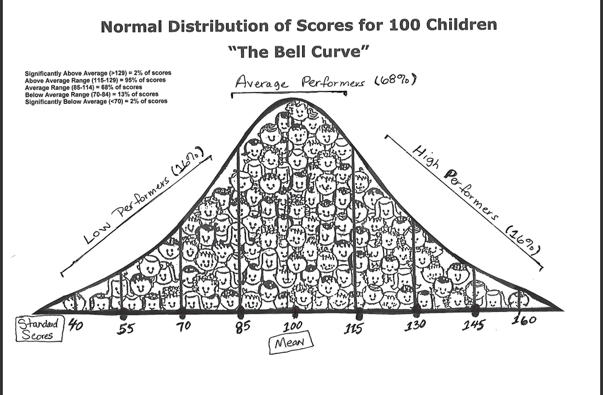
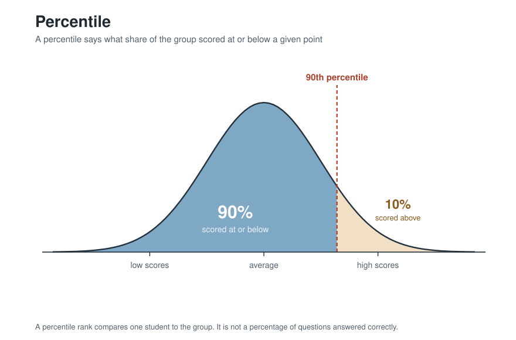
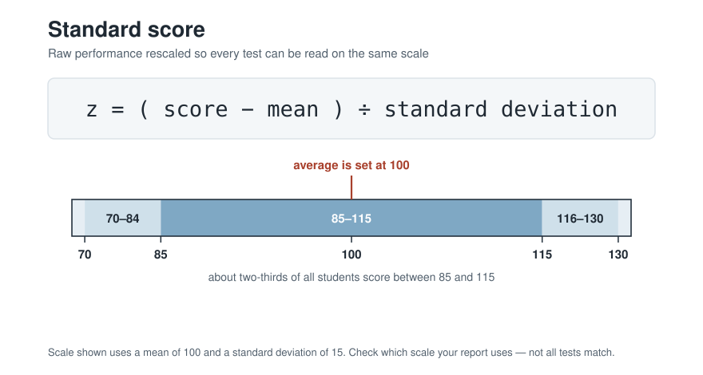
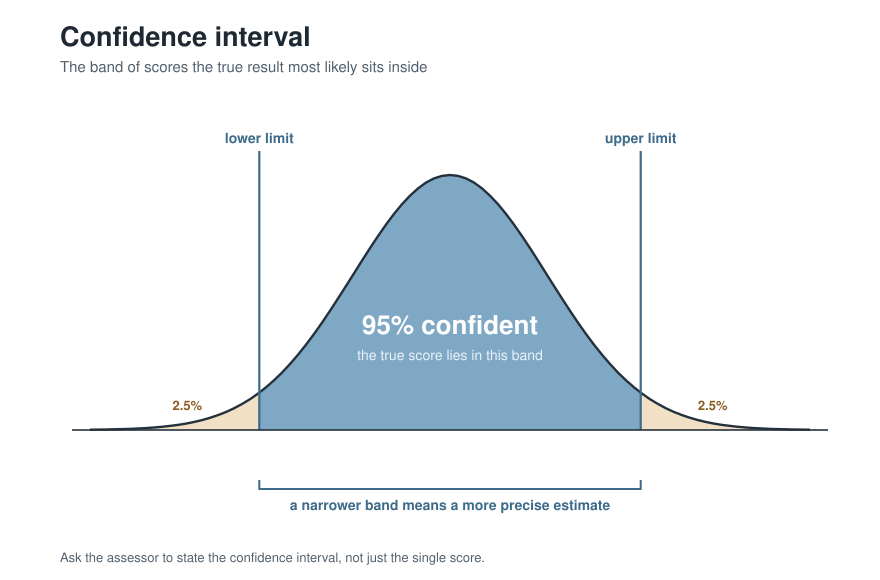
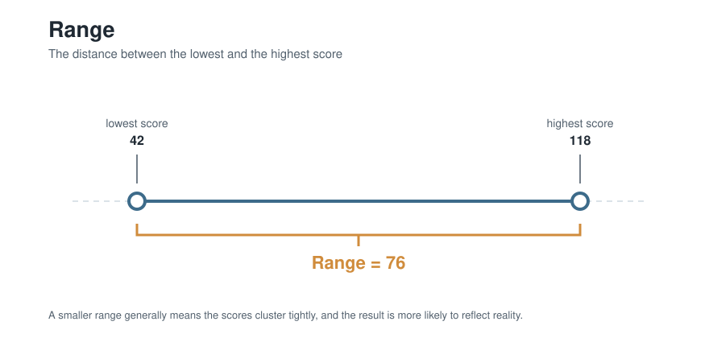
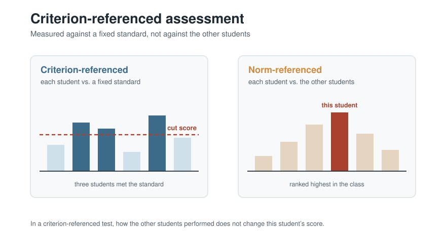
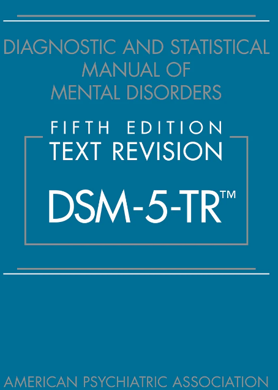

Decoding Assessment
The statistical vocabulary of your child's evaluation, in plain language
You do not need a statistics class to read your child's assessment report — but a report full of percentiles and standard scores is hard to question if the vocabulary is unfamiliar, and you are allowed to question it. Here is each term you will meet in an Autism assessment, and what it is actually telling you.
Behavioral Assessment
This measures social attention, restlessness, and social interaction. Concerns about aggressive or disruptive behaviors will show up on behavioral assessments. Special interests, literal interpretations, fixed conversational patterns, and social cue observation appear here as well.
A common evidence-based practice is the Functional Behavior Assessment, designed to find the root cause of why a behavior is happening. Much of that data is gathered on an A-B-C recording form: what happened before the behavior, what the behavior was, and what happened after.

Statistical Significance
Statistical significance asks whether the result of an assessment is accurate, or simply the result of random chance. A result can be called statistically significant if it occurs within a small range of standard deviation from the normal distribution.

Standard Deviation
The distance between the average score and higher or lower scores.
Each assessment has a different standard deviation. For example, a difficult math test may have 15 students between the high score and the average score. A simpler science test may only have 3 students between the highest score and the average score. The math test has the greater deviation.

Normal Distribution
This is a common distribution of outcomes from a test. Most of the class will score about the same. Some will score higher and some will score lower. Plot the scores on a graph and you get a bell shape — which is why the normal distribution is also called the bell curve.

Percentile
A percentile compares scores between individuals. A percentile rank of 50 means the score is as good as or better than 50 percent of others.

Standard Score
The standard score compares how many questions an individual gets correct against how many other students get correct. The average is set at 100.

Confidence Interval
Confidence interval is related to range. A statistician can say she is confident about the test results if the range of the results is small.
Confidence intervals are calculated using pre-defined formulas for each assessment. We can measure how often an assessment outputs the wrong result, and turn that into a numerical measure of confidence that it gave us the correct one.
A skilled assessor can confidently explain an assessment's confidence intervals in plain, understandable language. Ask them to.

Range
The difference between the largest score possible and the smallest score possible — and also between the smallest score received and the largest score received. When interpreting data from an assessment, a smaller range of scores generally means the data is more likely to reflect reality.

Criterion Assessments
This is a type of test that compares a student's performance to a state or class standard. The criterion is a desirable value decided by your community's relevant authority.

Diagnostic and Statistical Manual of Mental Disorders (DSM)
This is today's gold standard for medical diagnosis of neurodiverse expressions. It is a changing document, supported by the latest scientific and medical understandings of human cognition and behavior.

Putting the numbers together
Comprehensive collection
Data must be comprehensive because there is a risk of measurement error. This doesn't mean assessments are always wrong or shouldn't be done — they need to be done responsibly and as a community effort. A comprehensive report identifies strengths and weaknesses across the board and helps teachers develop the right plans. A lack of data can produce biases that lead to delays or ineffective treatment.
For case managers
Data can be overwhelming. Use underlining and highlighting to emphasize the main points. Terms like “percentile,” “standard deviation,” and “standard score” can confuse first-timers — grounding them in everyday analogies makes them clearer. Deficit-based language is also increasingly out of step with the current moment. One way to frame data is through a “relational” lens: a below-average standard score in communication need not be framed as a deficit, but as a sign that the community may be growing away from the test-taker — and the score marks the path back into relationship with that community.
Reading a report for EBPs
A report's academic achievement section can help identify potential reinforcers: does the student score highly in a subject because it's a personal interest, or because of how it's being taught? Exploring strengths tells you what's working so it can be copied elsewhere. The communication skills section shows the exact areas where support will help most.
Definitions drawn from Goldstein, S., & Ozonoff, S. (Eds.). (2018). Assessment of autism spectrum disorder (2nd ed.). Guilford Press.
Image credits
- Bell curve of 100 children — hand-drawn figure from SPED 860 course materials (Dr. Glennda McKeithan, University of Kansas, Fall 2024). Used with permission.
- DSM-5-TR cover — American Psychiatric Association Publishing (2022). Reproduced to identify the work.
- All other figures — original diagrams created for this site, 2026. The A-B-C form layout follows the standard three-column format used in functional behavior assessment (see CSESA, FPG Child Development Institute, UNC Chapel Hill, csesa.fpg.unc.edu).